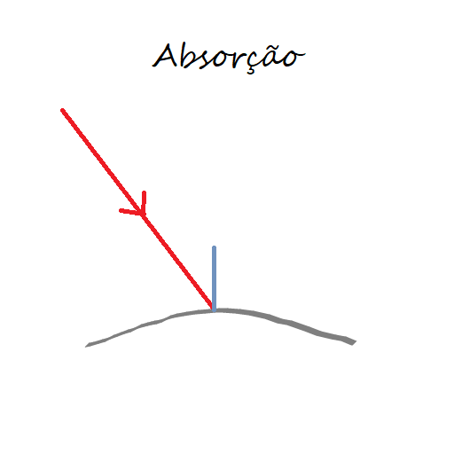
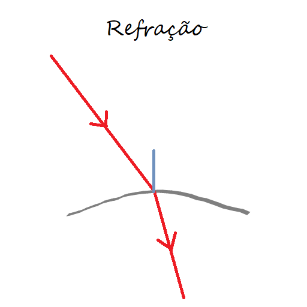
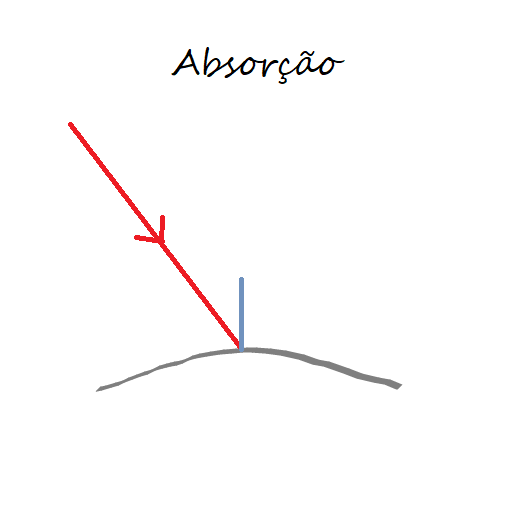
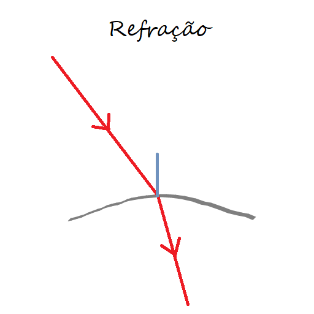

Iluminação
Esse é um ponto chave no desenho. Isso porque sem Iluminação todos os desenhos parecem apenas contornos, o que não acontece na realidade, e é através dela que se passa uma infinidade de detalhes. Com a iluminação, podemos passar ideia de texturas, de quanta luz reflete um objeto e criar tons metálicos ou foscos. Podemos ainda dar destaque a dadas partes da cena e criar ambientes mais interessantes (como uma caverna cuja saída se nota por raios de luz)
Embora fazer a iluminação em uma cena possa ser algo simples de entender, pode ser muito frustante. Isso porque quanto mais tragetórias que a luz percorre você imaginar, mais realística fica a cena só que mais demora e só funciona se você tiver a noção de volume dos objetos. Um erro comum em tentar desenhar rostos, por exemplo, é tentar melhorar focando só em como aumentar ou diminuir o contraste da luz, sem perceber que ela tem uma direção e pode ser tapada por um detalhe a frente. Nesses casos, o rosto parece reto, sem profundidade.
Espero não ter desmotivado demais. Foi só um aviso para que a ideia de como projetar raios de luz não se perca sem prática, pois é ela que torna as coisas mais rápidas.
A primeira coisa a se aprender é que a luz pode ser dada por zilhões de raios de luz individuais. Eles tem uma origem e uma direção. Quando atingem uma superfície, podem ser refletidos, absorvidos ou refratados (quando a superfície é transparente). Fatos interessantes: a tragetória não é perfeitamente reta, mas pode ser curvada pela gravidade; a cor muda conforme a velocidade do observador; e luz pode até mesmo dar voltas por causa de efeitos quânticos, mas não espere que faça diferença no desenho :p . Qual das três opções ocorre depende do material e do ângulo formado com a direção para qual "aponta" a superfície, conhecida como a "direção normal", ou simplesmente "normal".
 



Quanto mais homogênio, até em escala microscópica, mais homogeniamente estão as normais. Quando estão alinhadas os processos ocorrem de forma especular (raios que entrão em uma mesma direção têm o mesmo destino), e quando não estão ocorre de forma difusa, sem foco, (em que raios vindos em uma mesma direção têm diferentes destinos).
Na prática, essa é a diferença: